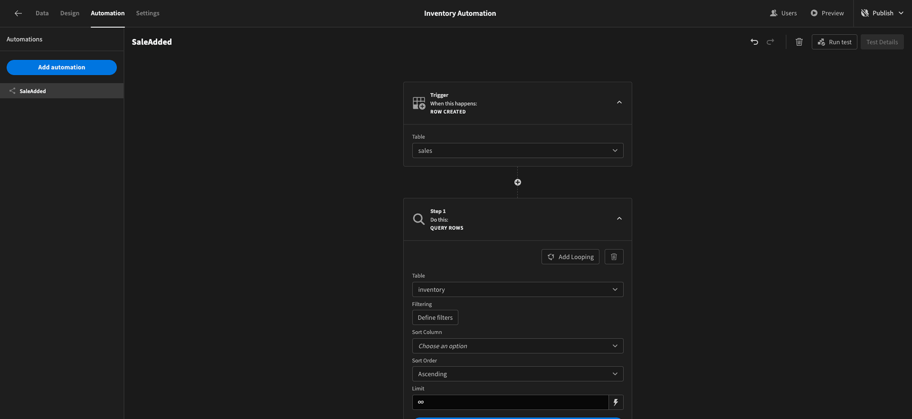

The problem
Users could build a workflow, but understanding where it failed was harder. They struggled to see what data went into and came out of each step. If a step failed, it was difficult to understand why.
This came up repeatedly in community feedback. People were also asking for better guidance, more flexible branching and additional building blocks. I needed to understand which problems deserved the most attention.

What the research showed
I planned and ran a paid Maze study, analysed the responses and presented the findings to the CEO, CMO and Head of Engineering.
Debugging was the biggest frustration
The study asked what users liked and disliked about the existing builder (multiple answers allowed). Debugging stood out: 68% selected it among the aspects they disliked most. Appearance, functionality and setup scored more positively.
What users needed help with
I grouped the written responses into themes covering difficult tasks, requested features and other feedback. Testing and debugging appeared most often: people wanted to inspect inputs and outputs, understand failures and test JavaScript steps. Getting started and guidance came next, with further requests around loops, branching, additional building blocks and working with complex data.
| Theme | What users struggled with | What they wanted | Users mentioning the theme |
|---|---|---|---|
| Testing and debugging | Seeing step inputs and outputs, understanding failures and testing JavaScript steps. | Clearer errors, easier inspection of outputs, console output and better testing tools. | 10 |
| Getting started and guidance | Choosing triggers, understanding field values and finding setup guidance. | Hints, step-by-step guidance, videos, templates and examples. | 8 |
| Loops and branching | Following results inside loops and working around branching limits. | More flexible branching and conditions, including inside loops. | 3 |
| Limited building blocks | Completing tasks without workarounds or external scripts. | A JavaScript editor with access to the platform’s environment. | 2 |
| Complex data and technical knowledge | Handling JSON and interpreting errors without a programming background. | No specific solution requested. | 2 |
The findings gave us a reason to prioritise debugging over the other requests. I used the study and recurring community feedback to make the case to the executive team, then agreed the direction with the Head of Product.
What I changed and why
Keep debugging detail beside the workflow.
I reviewed approaches in products including Stack AI, n8n and Airtable.
One option was to expand steps on the canvas to show their data and errors. That would put the information directly inside the workflow, but large outputs could take up a lot of space. Users still needed to see how the steps connected.
I chose the right sidebar. Data In and Data Out showed what the selected step received and returned. An Errors view explained failures so users could identify the problem, amend the step and fix bugs in their workflow.
This kept the detail beside the canvas, allowing users to inspect one step while following the overall flow.
Make larger workflows easier to navigate.
I made the canvas more compact and added zoom and pan. Users could move around larger workflows while keeping more of the flow in view.
Give each step a structure we could build on.
I worked with the Head of Product on a reusable structure for configuration, data and errors. Users could look in the same place when setting up a step or checking its results.
I also designed with future AI workflows in mind. I expected workflows to become increasingly important as AI systems and agents became part of products. A consistent step structure gave us something we could build on beyond the immediate debugging problem.
How I used AI
I used ChatGPT to help organise the research findings and explore recommendations for the executive proposal.
I checked its analysis against the original responses before using it in those discussions. The research chart and theme table kept the proposal grounded in what users had told us.
Results
- Negative feedback about the workflows product area fell from around eight to ten Discord reports a month to zero after launch, during the period I monitored.
- The workflows product area became the foundation for Budibase’s later redesign around AI agents. The reusable step structure supported the product’s new direction as well as the debugging needs that had prompted the work.
What I would do differently
The decline in negative reports suggested that the changes had addressed the debugging problem. I would have liked to validate that with users after launch and understand how quickly they could diagnose errors or where they still struggled.
There was ongoing pressure to release features, particularly in a startup like Budibase. I had to move on to the next product area before we completed that follow-up work.
Testimonial
Ben led a research project that completely changed how we approach development, giving us the insights we needed to actually back our strategy with data.
He just has a really strong instinct for understanding what users need. He’s meticulous, cares about the work, and brings a great attitude to the team.

Jamie Birss
Product Marketing Manager, Budibase